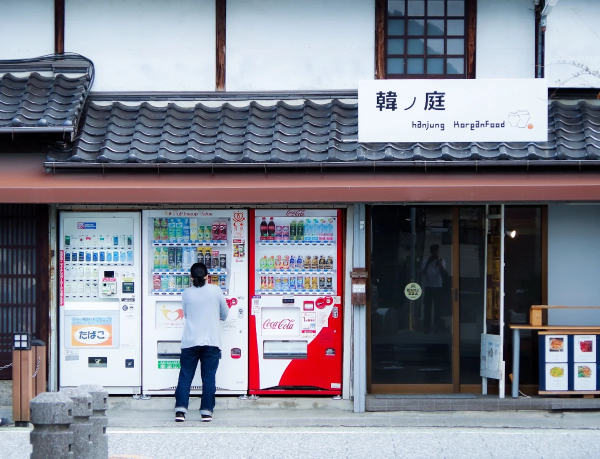
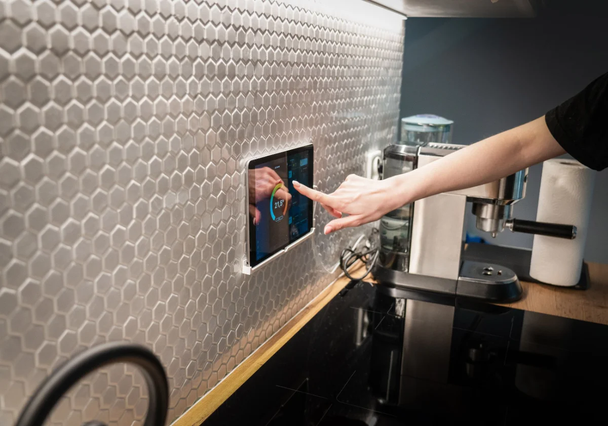
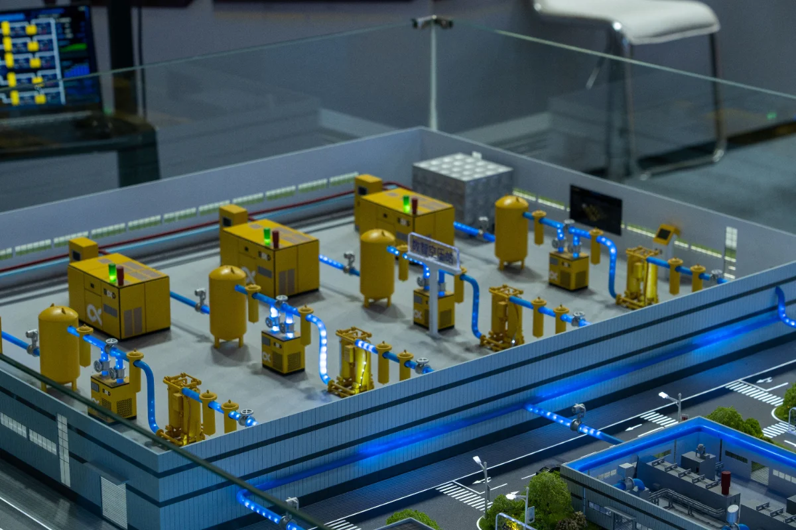

Lapisan infrastruktur yang menghubungkan setiap perangkat fisik ke jaringan QRIS Indonesia.
QoT bukan payment gateway.
Masuk, keluar. Sudah lunas sebelum kamu sampai palang.
Tanpa akun. Tanpa aplikasi. Charger-nya adalah kasirnya.
Terbuka begitu nilai berpindah.

Sekejap cahaya. Secangkir sempurna.

Rumahmu diam-diam melunasi tagihannya sendiri.
Mesin bertransaksi dengan mesin.

Setiap unit keluaran, faktur miliknya sendiri.
Tanpa kartu. Tanpa antre. Hanya niat.
QRIS menjadi jalinan cahaya tak kasat mata — nilai yang mengalir di antara segala yang menghasilkannya.